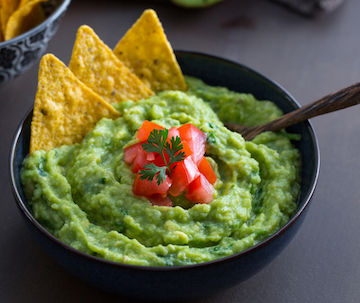

Guacamole Recipe:

Ingredient List:
- 3 ripe avocados
- 2 teaspoons lime juice
- 1/2 teaspoon salt
- 1/4 of a bunch of cilantro
- 1/3 onion chopped
- 1/3 tomato chopped
Instructions:
- First, scoop the avocados out of their peel and mash them using a mortar and pestol.
- When the avocado is smooth enough for your liking, add in the lime juice and salt.
- Finally, add in the chopped cilantro, onion, and tomato.
- Enjoy with tortilla chips or nachos.